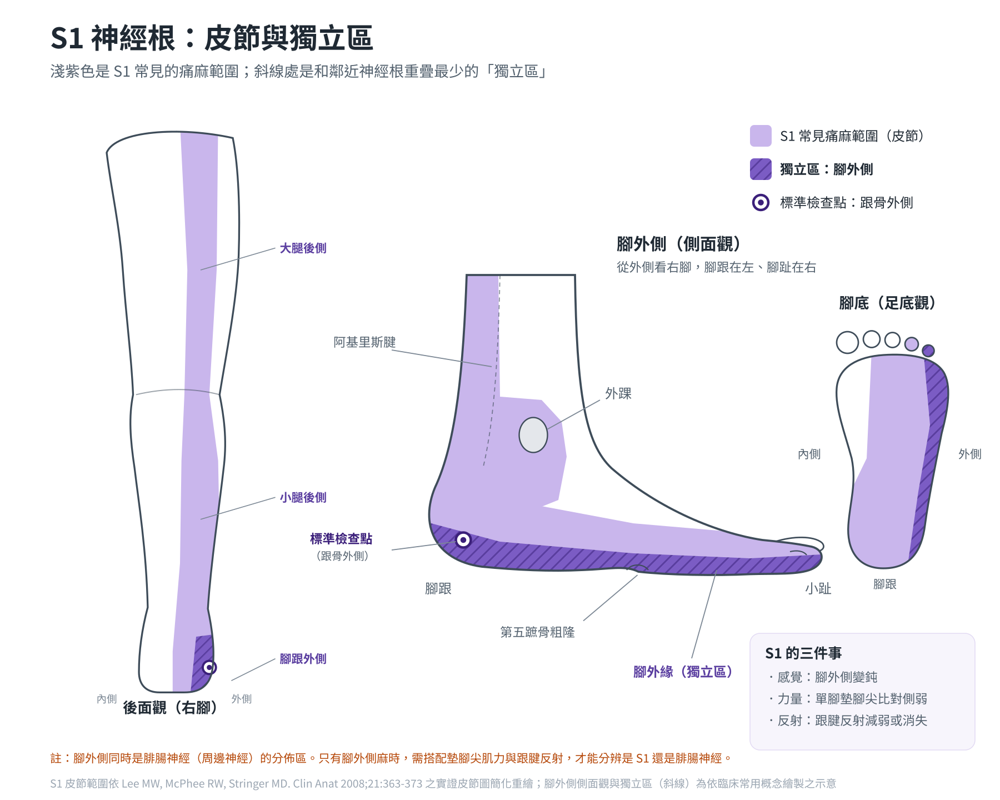

小腿後面、腳跟、腳外側麻？認識 S1 神經根壓迫
小腿後面、腳跟、腳外側麻？認識 S1 神經根壓迫
阿壁姐 50多歲，長期在市場擺攤，每天要搬幾箱貨。兩個禮拜前彎腰搬箱子時「拐」了一下，之後左邊屁股一路痠到小腿後面，最近連腳跟和腳外側都麻麻的。
讓她最在意的不是痛，而是「左腳墊不太起來」：拿高處的東西時，左腳跟就是使不上力。「醫師，我是不是坐骨神經痛？」
（文中個案為綜合門診常見情況的示意，非特定患者。）
從她描述的位置和力氣，我心裡第一個想到的是 S1 神經根。在腰椎幾條神經根裡，S1 是症狀「最照地圖走」的一條，也是最值得單獨拿出來講的一條。如果還沒看過全腰椎的症狀地圖，可以先讀前一篇〈腿麻到哪裡，問題就在哪一節？〉。
一、S1 神經根從哪裡來、往哪裡去
腰椎的神經根有一個規則：從同號椎骨的「下方」鑽出去。L4 從 L4-L5 之間出來，L5 從 L5-S1 之間出來。
那 S1 呢？薦椎原本是 5 節，成年後融合成一塊骨頭，節與節之間沒有椎間孔，取而代之的是薦椎前後兩面的小孔（薦孔，sacral foramina）。S1 神經根就是從第一對薦孔鑽出去的——規則其實沒變，只是那一節已經和 S2 長在一起。
關鍵在於它出去之前的那一段路：S1 神經根在椎管裡往下走時，會先經過 L5-S1 椎間盤的後方，貼著一個叫「側隱窩」的窄小空間。就像一條電線要穿過一個窄門，門邊的椎間盤一凸出來，或門框（小面關節、黃韌帶）變厚，它就先被夾到。
這就是為什麼：S1 的症狀，最常對應到的是 L5-S1 這一節。
S1 在薦椎管裡就先分成前後兩支，再各自從不同的孔出去：前支從骨盆面的前薦孔出來，加入坐骨神經，一路往下負責小腿後側、腳跟、腳外側的感覺，以及小腿肌的力量；後支從背面的後薦孔出來，只分佈到薦椎背側、臀部中間的皮膚和肌肉，和腿部的症狀無關。
二、S1 的症狀地圖
就像前一篇說的，每一條神經根都負責三件事：一塊皮膚的感覺、一組肌肉的力量、一個反射。S1 的三件事是：
| 項目 | S1 負責的範圍 | 受壓時可能出現 |
|---|---|---|
| 感覺（皮節） | 大腿後側、小腿後側、腳跟、腳外緣、腳底與小趾 | 痠、麻、電擊感一路往下；腳外側感覺變鈍 |
| 力量（肌節） | 墊腳尖（蹠屈）、臀大肌伸髖 | 墊腳尖沒力、上樓梯或走上坡推不動 |
| 反射 | 跟腱反射 | 跟腱反射變弱或消失 |
其中最值得記住的是 S1 的獨立區：腳外側。這是 S1 和鄰居重疊最少的地方，腳外側的感覺變鈍，再加上墊腳尖沒力、跟腱反射變弱，三件事對得上，定位就很有把握。
S1 還有一個特色：它是腰椎神經根裡，疼痛最「照地圖走」的一條。曾有研究分析發現，腰椎神經根痛有接近三分之二不符合皮節分佈，但 S1 例外，約 65% 的痛符合 S1 的皮節。

三、壓到 S1 的常見原因
有 S1 的症狀，不等於一定是 L5-S1 椎間盤突出。臨床上我會把幾種可能一起放在腦中：
- L5-S1 旁中央／關節下型椎間盤突出：最常見。突出剛好擋在 S1 穿過側隱窩的路上，常見於年紀較輕、搬重物或久坐的人，常常有一個明確的「拐到」的瞬間。
- L5-S1 側隱窩狹窄：小面關節肥厚、黃韌帶變厚，是退化帶來的骨性壓迫。多半年紀較大，症狀常在站久、走久後加劇，彎腰或坐下來反而舒服。
- L4-L5 大塊突出往下移位：突出的碎片往下滑，也可能壓到 S1，這時影像報告寫的是 L4-L5，但症狀卻是 S1。
- 腰薦移行椎：有些人天生腰椎多一節或少一節（L5 薦椎化或 S1 腰椎化），影像報告寫的節數，可能和實際受壓的神經根對不上，判讀時要先把節數數清楚。
順帶一提：L5-S1 的「極外側型」突出，壓到的其實是從這一節鑽出來的 L5，不是 S1。同一節椎間盤，突出方向不同，結果就不同。
四、容易和 S1 混淆的問題
小腿後側、腳跟、腳外側的不適，不一定來自腰椎。幾個門診常見的「模仿者」：
| 問題 | 症狀像 S1 的地方 | 和 S1 不一樣的線索 |
|---|---|---|
| 深臀症候群 | 坐骨神經被卡在臀部深層，可以痠麻到小腿後側 | 「坐不住」、臀部深處壓痛；腰不太痛，咳嗽不太會加劇 |
| 臀小肌肌痛點 | 轉移痛可沿大腿後外側往下，稱為「假性坐骨神經痛」 | 按壓臀部的肌痛點就能重現症狀；肌力、反射正常 |
| 腓腸神經受壓 | 腳外側、外踝附近麻 | 只麻腳外側一小塊；墊腳尖的力氣和跟腱反射正常 |
| 跗骨隧道症候群 | 腳底麻、燒灼感 | 麻以腳底為主、不往上延伸；敲內踝後方可能誘發麻電感 |
分辨的重點是：症狀是「一整條」還是「一小塊」。S1 壓迫常常從腰臀一路往下到腳，帶著肌力和反射的變化；周邊神經受壓則通常局限在那條神經的分佈範圍。當然，也可能腰椎和臀部同時有問題（雙重壓迫），這時兩邊都要處理。
五、門診怎麼確認是 S1
1. 單腳墊腳尖測試
S1 負責的小腿肌力氣很大，醫師用手去抗衡，往往測不出輕微的無力。所以我會請患者站著、單腳墊腳尖，跟著每秒一拍的節奏重複做（一拍上、一拍下，可以用手機節拍器）：腳跟盡量抬到最高、膝蓋打直，手指可以輕扶牆壁保持平衡但不借力，一直做到跟不上節奏、或腳跟抬不高為止，數數看做了幾下，再和另一腳比較。
曾有研究建議，健康成人單腳墊腳尖以 25 下作為正常標準；後續的統合分析則發現，年輕成人平均約 29 下，年長者平均只有約 12 下，所以我不看絕對次數，而是看左右差距——健側能做 20 下、患側只有 8 下，就是很有意義的線索。
2. 跟腱反射
用反射槌敲腳跟上方的跟腱，左右比較。單側變弱或消失，是 S1 受壓很重要的客觀證據。
3. 獨立區的感覺
輕碰兩腳的腳外側，問患者感覺有沒有一樣清楚。
4. 直腿抬高測試
躺平、膝蓋打直抬腿，誘發出小腿以下的線狀痛，提示 L5 或 S1 神經根受刺激；再配合上面三項，就能分出是哪一條。
5. 影像什麼時候安排
MRI 看椎間盤和神經最清楚。一般在出現紅旗症狀、肌力明顯或持續下降，或保守治療一段時間仍未改善、需要討論介入或手術時安排。影像的角色是「對答案」：確認壓迫的位置和型態（椎間盤、狹窄、還是移行椎），而不是取代理學檢查。
六、治療思路：先分清楚「壓在哪裡」
確認是 S1 之後，我會再問自己一個問題：壓迫是在椎管裡的側隱窩，還是在周邊的臀部？這決定了每個工具要用在哪裡。
針刀與乾針：處理的是軟組織
壓迫點在椎管內時，針刀碰不到突出本身，也不會把椎間盤「推回去」。它能處理的是外面那一層：
- L5-S1 周圍的保護性痙攣：多裂肌、豎脊肌，減少「痛→緊→更痛」的循環。
- 周邊的卡點：如果超音波下看到坐骨神經在深臀區被筋膜沾黏，可以在影像導引下鬆解，處理「雙重壓迫」中周邊的那一個。
「增加活動度」不一定是目標
L5-S1 是全腰椎承受剪力最大的節段。如果問題是椎間盤失能或節段不穩定，一味鬆解反而可能讓不穩定更明顯。所以我的安排通常是：
- 急性期：減少痙攣、讓神經根有機會消炎，活動以「不誘發腿部症狀」為原則。
- 亞急性期之後：重點轉向「控制」，也就是多裂肌與深層核心訓練，配合物理治療師安排動作訓練。
中藥調養
依體質與病程選方，例如偏血瘀疼痛可參考身痛逐瘀湯的思路，慢性反覆、腰膝痠軟者常以獨活寄生湯加減。中藥的角色是協助調整體質、配合整體治療，需由醫師診察後開立，請勿自行購買服用。
治療前須知
- 乾針、針刀皆屬侵入性處置，可能出現痠痛、瘀青、短暫麻木感、感染等風險。L5-S1 位置深、超音波不容易看清楚，深層處置會在超音波導引下確認針尖層次，影像看不清楚時不做深層處置。
- 服用抗凝血劑、有凝血功能異常、懷孕或治療部位有傷口感染者，請先告知醫師。
- 每個人的狀況不同，治療方式與順序需經醫師當面評估後安排。
七、出現這些症狀，請立刻就醫
- 會陰、肛門周圍麻木，或排尿、排便異常：需排除馬尾症候群。S2 到 S4 負責會陰和括約肌，L5-S1 的大塊中央型突出可能一起壓到。
- 墊腳尖的力氣持續變弱，或雙側腿都開始麻、無力。
- 伴隨發燒、不明原因體重減輕、癌症病史，或重大外傷後發生。
遇到這些狀況，我會直接建議轉介急診或脊椎外科，讓患者在最短時間內得到影像與外科評估。
八、重點結論
- S1 從第一對薦孔出來，出來前先經過 L5-S1 椎間盤後方的側隱窩，所以最常對應到 L5-S1 這一節。
- S1 的三件事：小腿後側到腳外側的痠麻、墊腳尖沒力、跟腱反射變弱；獨立區是腳外側。
- 不一定是椎間盤：側隱窩狹窄、上一節的下移碎片、移行椎，都可能壓到 S1。
- 也不一定在腰椎：深臀症候群、臀小肌肌痛點、腓腸神經、跗骨隧道都會模仿 S1。
- 先確認壓在哪裡，再決定工具用在哪裡；急性期減少刺激，亞急性期之後重建控制。
墊不起來的腳尖，常常比痛更誠實。
本文僅供醫療衛生教育參考，不能取代醫師的診斷與治療。每個人的病情、體質與治療反應不同，文中提及的治療方式並非適用於所有人，亦不保證療效；侵入性治療可能伴隨副作用與風險。如有身體不適，請尋求合格醫療專業人員當面評估。
參考文獻
- Fardon DF, Williams AL, Dohring EJ, et al. Lumbar disc nomenclature: version 2.0. Spine J. 2014;14(11):2525-2545.
- Lee MW, McPhee RW, Stringer MD. An evidence-based approach to human dermatomes. Clin Anat. 2008;21(5):363-373.
- Murphy DR, et al. Pain patterns and descriptions in patients with radicular pain: does the pain necessarily follow a specific dermatome? Chiropr Osteopat. 2009;17:9.
- Lunsford BR, Perry J. The standing heel-rise test for ankle plantar flexion: criterion for normal. Phys Ther. 1995;75(8):694-698.
- Bohannon RW. The heel-raise test for ankle plantarflexor strength: a scoping review and meta-analysis of studies providing norms. J Phys Ther Sci. 2022;34(7):528. doi:10.1589/jpts.34.528